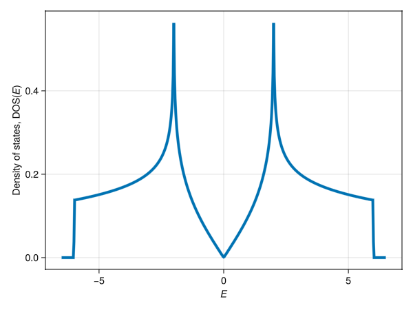

Density of states
For Hermitian models, the density of states (DOS) of a parameterized tight-binding model can be computed via densityofstates. The DOS is evaluated with the generalized Gilat–Raubenheimer method [1] – meshing the Brillouin zone, linearizing each band within every mesh cell using its group velocity, and accumulating the analytic per-cell contributions – and is normalized per unit cell, so that its integral over all energies equals the number of bands $N_{\text{b}}$, i.e., $\int \mathrm{DOS}(E)\,\mathrm{d}E = N_{\text{b}}$. We illustrate the functionality with the example of graphene.
Graphene
We build the standard nearest-neighbor graphene model – the (2b|A₁) EBR of plane group p6mm (⋕17) – and evaluate its DOS over a uniform energy grid:
using Crystalline, SymmetricTightBinding
brs = calc_bandreps(17, Val(2))
cbr = @composite brs[5] # (2b|A₁), 2 bands
ptbm = tb_hamiltonian(cbr, [[0,0]])([0.0, 1.0]) # zero on-site energy, unit nearest-neighbor hopping
Es = range(-6.5, 6.5, 501)
dos = densityofstates(ptbm, Es; Nk = 200)The result features the well-known graphene DOS hallmarks: a linear vanishing at the Dirac point ($E = 0$), logarithmic van Hove singularities at $E = \pm 2$, and the band edges at $E = \pm 6$.
using GLMakie
axis = (; xlabel = rich("E", font=:italic), ylabel = "Density of states, DOS(" * rich("E", font=:italic) * ")")
lines(Es, dos; axis)
We can confirm the per-unit-cell normalization by evaluating the sum rule $\int \mathrm{DOS}(E)\,\mathrm{d}E = N_{\text{b}}$ (here, $N_{\text{b}} = 2$):
sum(dos) * step(Es)2.0Energy-scaling via transform
In some settings – e.g., photonic tight-binding models – the model eigenvalues $E$ represent a frequency-quantity $\omega^2$ rather than the energy itself. The transform keyword maps each eigenvalue $E$ to $transform(E)$ and applies the corresponding chain-rule rescaling of the group velocity, so that the eigenvalues are interpreted in the transformed setting. For instance, to obtain a DOS as a function of $\omega = \sqrt{E}$ for a model whose (nonnegative) eigenvalues $E$ represent $\omega^2$, we may simply pass transform = sqrt as a keyword argument.
Partial DOS via bands
By default every band contributes. The bands keyword restricts the sum to a chosen subset, giving the partial DOS of that sub-manifold; the sum rule then reads $\int \mathrm{DOS}(E)\,\mathrm{d}E =$ length(bands). For graphene's two bands, the lower one carries unit weight:
dos_lower = densityofstates(ptbm, Es; Nk = 200, bands = [1])
sum(dos_lower) * step(Es)1.0Partial DOSs partition the total, so a partition of the band indices recovers the full DOS:
dos_upper = densityofstates(ptbm, Es; Nk = 200, bands = [2])
maximum(abs, (dos_lower .+ dos_upper) .- dos)4.336808689942018e-19This matters when some bands of a model are not physical states of the system described. In a photonic model of the kind mentioned above, the transverse (physical) bands are accompanied by longitudinal ones pinned at zero frequency; under transform = sqrt that entire manifold collapses into the lowest energy bin, producing a spike orders of magnitude above the transverse DOS. Restricting to the transverse bands gives the meaningful partial DOS directly.
Bands are indexed by ascending energy at each k-point independently, as returned by spectrum. A fixed index thus tracks a sorted position, not a band followed continuously through the Brillouin zone. Where a sub-manifold is separated from the rest by a gap – as the longitudinal/transverse split is – the two coincide; where bands cross into the selected manifold, they do not.
- 1B. Liu, L. Lu, et al., Generalized Gilat–Raubenheimer method for density-of-states calculation in photonic crystals, J. Opt. 20, 044005 (2018). The original method is due to G. Gilat & L.J. Raubenheimer, Accurate Numerical Method for Calculating Frequency-Distribution Functions in Solids, Phys. Rev. 144, 390 (1966).